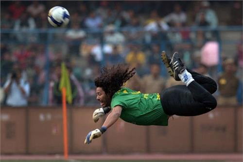

正文: 见图，《魂斗罗》的敌人设定深受《异形》影响：
《魂斗罗》首作（街机及FC加量移植版）是说在人类已经建立普世政权的未来，有神秘武装组织“大红龙”……抱歉，是“大红隼”，在大洋孤岛上建立军事基地，威胁和平。玩家前去镇压，最终攻进岛屿核心部，竟发现一异形繁殖巢穴，于是恶战一番将其捣毁，粉碎了大红隼灭绝人类的阴谋。
续作《超级魂斗罗》（街机及FC加量移植版）则是在首作剧情若干时日后，某人族军事基地发生事故，官兵皆被异形感染控制，玩家再度前去清剿——所以玩家在游戏前、中期所杀害及摧毁的，都是人类及人类建造的军武。
第一作里的多数敌人也是人形，所以不妨认为他们也和第二作里同样，不慎被异形寄生。异形不通人理，或许不知道爆头比打脚致命。主人公身为特种作战专家，自然能发现这一点加以利用，所以卧倒时翘起腿来，引诱敌人优先朝自己的非要害部位射击。
是为“响尾蛇匍匐”。
Ex.: アメリカの工兵学は世界一チイイイイ
Ex. 2:
